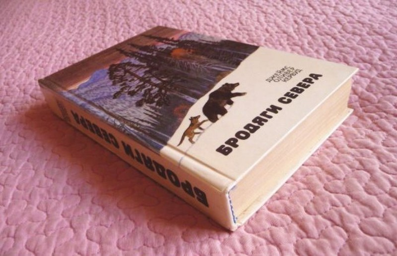

Про книги, запахи, флешбеки и эстетику


Хорошая знакомая Настя написала пост о воздействии запахов на наши воспоминания и эмоциональное состояние. Начал ей отвечать и как это иногда случается, понял, что мой ответ перерастает в микропост. Да будет так.

До того момента я не думал, что на меня так ярко может что-то повлиять в отношении моей реакции на запахи. Вообще, особенности восприятия таковы, что когда я пытаюсь вспомнить какую-то музыку, я как будто слышу её внутри себя. Когда пытаюсь вспомнить картину - вижу, когда текст - диктую его про себя. А вот как я ни стараюсь вспомнить какой-то запах, я не могу его никоим образом ощутить, но если я ощущаю этот запах в реальной жизни, то я точно сопоставляю его с его названием. Другими словами для меня нет проблемы понять, что сейчас пахнет еловой хвоей, а сейчас - вяленой рыбой. Но какого-то эталона внутри, с которым бы я мог это сравнить, у меня нет. Занятно, правда? Может быть это связано с воспроизводимостью? При желании я могу напеть какую-то мелодию, что-то записать на листе бумаги по памяти или попытаться нарисовать. Но вот воспроизвести какой-либо запах своими силами не получится (гусары, молчать!).
Ещё мне почему-то нравится запах дёгтя. Когда несколько лет назад на улице Мира перекладывали трамвайные шпалы, я остановился посреди улицы и минут 15 просто дышал всей грудью. Интересно, какой процент людей могут назвать этот запах приятным? Сегодня я задумался и пытался понять, может быть запах дёгтя я тоже люблю по той причине, что он у меня связан с чем-то из детства? Если так, то вероятно это из тех времён, когда мы с дедушкой ходили в гараж. Гараж был расположен далеко и идти приходилось по железнодорожным путям. Возможно это оттуда. До сих пор давлю в себе желание как-то сходить в сторону того гаража, чтобы просто окунуться в воспоминания более, чем двадцатилетней давности. Место на редкость гадкое - недалеко свалка, вокруг грязь, где-то недалеко остов сгнившей машины, какие-то ржавые бочки. Если снимать фильм про постъядерный апокалипсис, то лучше места и не придумать. И что-то меня туда тянет. Помню, как прыгал с крыши гаражей в сугробы, как бегали друг за другом с нашей собакой, как я мастерил какие-то непонятные конструкции и отпускал их в плавание по бочке, как моя фантазия ржавые железяки превращала то в меч, то в бластер... Одним словом, в этом мерзковатом на вид месте остался кусочек моего прекрасного детства. Тогда для меня всё выглядело иначе. Ещё мне нравится запах чеснока. Серьёзно. Вот тут уж точно не знаю, почему. В детстве чеснок точно не часто встречался в моём рационе.
Кстати, о любви к постъядерным пейзажам нашей родины. У японцев есть для определения этого некое отдельное слово, но к сожалению, я ни вспомнить, ни найти его не могу. У нас это называется двумя словами - "эстетика е..ней". Суть в том, что ты находишь очаровательным проявления несовершенства нашего мира. Обшарпанный покосившийся домишко, палисадничек, огороженный крашенными в прошлом веке автомобильными покрышками, вкопанными наполовину в землю или, скажем, качели с облупившейся краской, будто телепортировавшиеся в наше время нейросетей и электрокаров прямиком из СССР 70-х годов - всё это вызывает у меня какое-то сладко-щемящее чувство. Будто где-то рядом есть дверь, зайдя в которую ты снова можешь попасть обратно в прошлое. Есть у меня пара любимых двориков подобного рода. Редко-редко я добираюсь туда, встаю где-нибудь поодаль, смотрю, смотрю, смотрю и не могу насмотреться на этот небольшой, уже инородный, но в то же время такой родной кусочек нашего мира. Эти пыльные окна таят за собой какую-то свою жизнь. Она вероятно тоже нелегка и не особо красива, но за каждым стёклышком неопределённого цвета, смотрящим на мир с облупленной стены, медленно течёт своя история. За каждым живут какие-то люди со своими чувствами эмоциями, стремлениями, своим представлением о прекрасном и гадком. И так иногда отчаянно хочется на полчаса погрузиться в эту историю.
Ещё в детстве я любил заглядывать в чужие окна, ловить взглядом кусочек интерьера и представлять, как бы я жил в той комнате вот с такими обоями на стенах, с этой лампой на столе. А ведь ещё можно было бы достать любую книгу с полок шкафа и почитать. И вот, моя фантазия уже нарисовала целую семью, снабдила щедро её членов привычками, увлечениями, внешностью и историей и... А тут следующее окно без штор, ещё интереснее. И кошка на подоконнике на меня смотрит... Такое порою бывает и сейчас, но всё реже и реже. Возможно потому, что вместо того, чтобы мысленно строить мир за чьим-то окном теперь мы с женой строим свой и это даже увлекательнее.
P.S.: Даже захотелось купить упаковку биопарокса - эдакий ингалятор времени. Нажимаешь на кнопку и отправляешься на минутку в прошлое, в детство. Как оказалось, его сняли с производства. Пойти что-ли, пачку дегтярного мыла приобрести, пока его тоже не запретили?
Теги: мысли-вслух, ностальгия